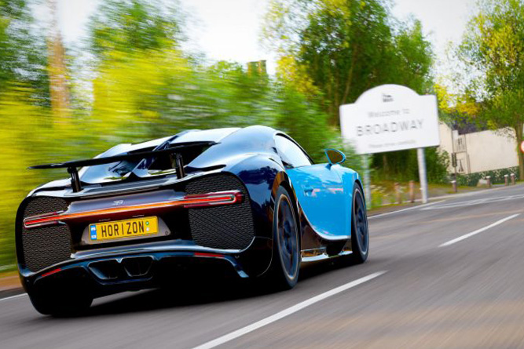
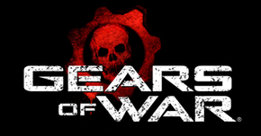
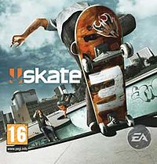
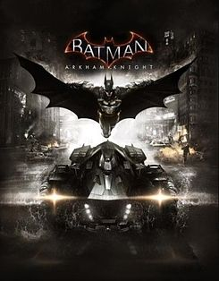
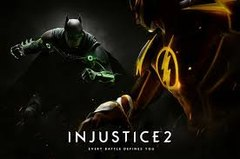
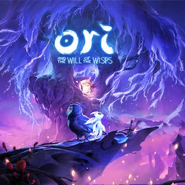
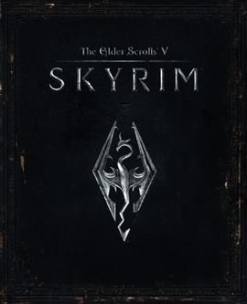

Jogos que eu recomendo

Forza (série)
Forza Horizon Ou Forza Motorsport ( /ˈfɔːrtsə/; em italiano 'Força') é uma série de videogames de corrida para consoles Xbox e Microsoft Windows publicados pela Xbox Game Studios. A franquia está atualmente dividida em duas séries, a série original Forza Motorsport desenvolvida pela Turn 10 Studios e a série Forza Horizon, de foco em mundo aberto, desenvolvida principalmente pela Playground Games.
A série Forza procura emular as características do desempenho e de condução de um grande número de carros de produção, modificados ou de corrida da vida real. Forza é visto frequentemente como a resposta da Microsoft a Gran Turismo para os consoles PlayStation.[1]
Em fevereiro de 2010, os jogos Forza venderam mais de 10 milhões de cópias[2] desde o lançamento do Forza Motorsport em maio de 2005. Em dezembro de 2016, a série faturou mais de US$ 1 bilhão no varejo,[3][4] fazendo do Forza uma das franquias de videogame de maior bilheteria. Mais de 14 milhões de jogadores únicos foram registrados na comunidade Forza no Xbox One e Windows 10 até dezembro de 2016.[5]
Em 2019 a Microsoft anunciou o Forza street, jogo para Windows 10, Android, IOS, com foco em arrancadas.[6]

Gears of War
Gears of War é uma franquia de jogos eletrônicos criada e originalmente propriedade da Epic Games, desenvolvida e gerenciada pela The Coalition, e agora a Xbox Game Studios tem seus direitos e publica-a. A série foca no conflito entre a humanidade, os reptilianos humanoides subterrâneos conhecidos como Locust Horde, e os seus homólogos modificados, os Lambent. A franquia consistem em jogos de tiro em terceira pessoa, os quais foram suplementados por uma série de quadrinhos e cinco romances. De acordo com a Microsoft, a série Gears of War já vendeu mais de 22 milhões de unidades e rendeu mais de $1 bilhão (USD) em receita até janeiro de 2014.[1][2][3][4]

Sea of Thieves
Sea of Thieves é um jogo multiplayer cooperativo de ação e aventura, com temática pirata, jogado a partir de uma perspectiva em primeira pessoa.[8][9] O jogo apresenta suportes em multi-plataforma entre PC's que tenham o sistema Windows 10 e o Xbox One.[10] Um grupo de jogadores viaja e explora um mundo aberto através de um navio pirata e assume papéis diferentes, como direção, içamento de velas, navegação e disparo de canhões.[9][11] Os jogadores embarcam em missões, colecionam saques e entram em combate com outros jogadores.[11] Sea of Thieves é um mundo de jogo compartilhado, o que significa que grupos de jogadores se encontrarão regularmente durante suas aventuras.[9] O jogo tem um estilo de arte de desenho animado e um mecanismo de física exagerado que permite aos jogadores realizar acrobacias, como ser arremessado por canhões de navios

Skate 3
O jogo se passa na cidade fictícia de Port Carverton, que aceita o skate, diferente da mentalidade de que "skatistas não são criminosos" presente no segundo jogo. Apesar de a cidade ser mais colorida e amigável do que a de Skate 2, que apresenta cores pouco saturadas e ruas acinzentadas, a jogabilidade continua semelhante à dos dois primeiros jogos.[3] Port Carverton é formada por três distritos: Centro, a Universidade e Industrial.
Vários skatistas profissionais notáveis aparecem durante o jogo, como Darren Navarette, Terry Kennedy, Eric Koston, Chris Cole, Pat Duffy e Jason Lee.
Em contraste com o jogo original Skate, dois novos níveis de dificuldade foram adicionados: "Fácil" e "Hardcore". O modo "Fácil" permite ao jogador executar manobras com mais facilidade e proporciona maior controle do personagem. O modo "Hardcore" tenta fornecer uma jogabilidade mais realista do skate e o jogador precisa executar manobras com precisão. O jogo também conta com uma "Escola de Skate" introdutória, onde o treinador Frank (Jason Lee) ensina ao jogador o básico sobre skate, como fazer grinds e realizar ollies. Essa novidade é opcional e a área também pode ser visitada no modo livre.

Batman: Arkham Knight
Batman: Arkham Knight decorre em Gotham City, cidade que está totalmente aberta desde o início do jogo. O jogador pode correr toda a cidade dentro do limite das suas fronteiras.[7] Arkham Knight tem muitas das mecânicas e engenhocas usadas nos jogos anteriores da série Arkham, incluindo o sistema de contagem de combos e a visão de detective. Todas as engenhocas de Batman de disparo rápido, como os batarangues, podem ser agora ser usadas no ar. O fato de Batman pode ser melhorado durante o jogo, algo já começado em Arkham City. O personagem pode voar pela cidade usando a sua capa, podendo agora planar por maiores períodos de tempo. O arpéu, pode ser usado enquanto voa para mudar de direção instantaneamente,[6] assim como pode ser disparado duas vezes no ar para desencadear vários movimentos.[8][9] Existe um novo batarangue equipado com um sensor, que pode ser usado para dar informações sobre um determinado local,[9] e o Sintetizador de Voz usado para direcionar os inimigos para armadilhas.[10] O Anulador pode ser usado para desarmar e fazer explodir armas inimigas, criar armadilhas nas munições dos inimigos ou marcar veículos para Batman perseguir.[11]

Injustice 2
injustice 2, é um jogo de luta que coloca os jogadores para controlar os heróis e vilões do universo DC Comics em combates uns com os outros. Assim como seu antecessor, possui o botão "marca do personagem" que ativa sua habilidade específica criada para diferenciar uns dos outros, além de um sistema de controle semelhante ao seu antecessor, tais como as transições e interatividade dos cenários, que também permanecem em Injustice 2. O super-medidor, dividido em quatro seções, sendo que cada uma permite aos jogadores executar seus movimentos especiais mais avançados e quando carregada completamente, liberar os poderosos "supermove". Os jogadores podem agora gastar o medidor para realizar uma manobra evasiva ou escapar de uma combinação do inimigo

Ori and the Will of the Wisps
Os jogadores assumem o controle de Ori, um espírito guardião branco. Para progredir no jogo, os jogadores têm a tarefa de se mover entre plataformas e resolver quebra-cabeças. Diferente de Ori and the Blind Forest, Will of the Wisps parece confiar em salvamentos automáticos em vez de em links alma colocados manualmente, e o sistema de atualização sequencial do primeiro título foi abandonado por um sistema de fragmentos mais parecido com os encantos de Hollow Knight

Tom Clancy's Rainbow Six
Tom Clancy's Rainbow Six Siege é um jogo de tiro na primeira pessoa táctico, em que os jogadores assumem o papel de um dos membros da equipe Rainbow, uma unidade contra-terrorista. Os membros têm diferentes nacionalidades, habilidades e equipamentos.[4] Por exemplo, um deles com o nome Twitch tem um drone que pode dar choques aos inimigos com uma descarga eléctrica, enquanto que Smoke tem a habilidade de colocar gases venenosos, fazendo os inimigos perderem vida nas áreas afectadas. Como resultado, o jogo tem uma estrutura assimétrica.[5] Cada um dos lados têm acesso ao "Recruit"(Apenas nas partidas rápidas ou recém chegado), cujo equipamento e aparelhos podem ser personalizados pelo jogador, conforme os requerimentos da missão em que vão entrar.[6] Os jogadores só têm acesso a um operador durante uma rodada. Os "gadgets", como as granadas, são valiosas porque o seu numero é limitado.[7] O trabalho em equipe e as comunicações entre jogadores são pontos encorajados em Siege, e é pedido aos jogadores para integrar as suas habilidades para eliminar os inimigos
The Elder Scrolls V
Skyrim é um jogo de RPG que mantém a tradicional jogabilidade de mundo aberto encontrada na série The Elder Scrolls.[5] O jogador é livre para andar pela terra de Skyrim a sua vontade. Em Skyrim há nove grandes "posses", com nove capitais que são as principais cidades do jogo. Também há várias pequenas aldeias, cavernas, templos, fazendas e montanhas. Cada vilarejo e cidade possui sua própria economia, que o jogador pode manipular ou sabotar se escolher fazer isso.[6] Ao visitar as cidades, o jogador pode completar atividades como cozinhar, agricultura, cortar madeira e criar itens de metal na forja mais próxima, como também aceitar trabalhos (chamados de "Quests") para ganhar dinheiro.[6] Qualquer trabalho que um NPC pode realizar também pode ser feito pelo jogador.[7] O nível do jogador aumenta quando suas habilidades aumentam. Dezoito habilidades estão presentes em Skyrim, e o sistema de classes de Oblivion foi removido.[8] Perks (ou bônus) são capacidades específicas de cada habilidade, organizada em um sistema de grupo de ramificações chamado de "árvores de Perks". Cada aumento de nível permite que outro benefício seja escolhido. Existem 280 perks (ou bônus), e agora é possível passar do nível 81, mas depois disso a taxa de aumento das habilidades é reduzida.[9] O HUD na tela apenas aparece quando a vida, energia ou mágica do jogador estão se esgotando. Itens e esquemas de equipamentos podem ser salvos por um menu de rápido acesso, e o menu de inventário na tela de pause é apresentado em uma sobreposição em estilo bússola;[5] enquanto que no inventário, o jogador pode girar e se aproximar dos itens adquiridos
Stardew Valley
Stardew Valley é um jogo de simulação de fazenda primariamente inspirado pela série de videogames Harvest Moon. O jogador pode selecionar um de cinco tipos de fazenda de acordo com sua preferência em estilo de jogo, como uma com mais oportunidades de pilhamento da terra, uma com mais recursos de mineração, e outra com um rio de pesca. O campo da fazenda é inicialmente transbordado de pedras, árvores, troncos, e mato, e o jogador deve trabalhar para limpá-los para recomeçar a fazenda, tendendo a plantações e pecuária para gerar lucros e poder expandir ainda mais as construções e recursos da fazenda.